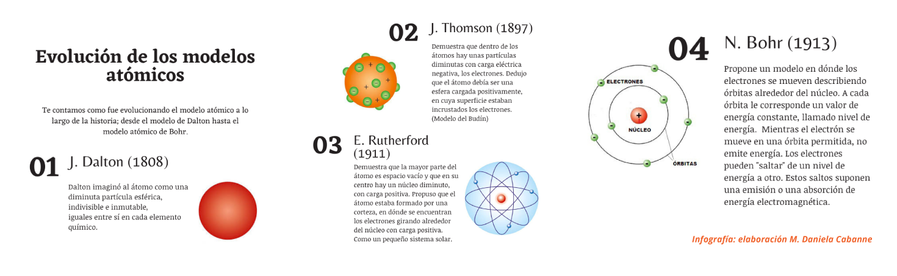

2. El átomo¶
Definición de átomo¶

Imagina que tienes una hoja de papel y la cortas por la mitad, y luego otra vez, y otra vez... llegaría un momento en que tendrías un trocito tan pequeño que ya no podrías cortarlo más. Ese "trocito" final es el átomo.
El átomo es la pieza de construcción de todo el universo: desde tu móvil hasta el aire que respiras o las estrellas.
Los fenómenos eléctricos tiene su origen en la estructura interna de la materia, que está formada por partículas diminutas llamadas átomos, como hemos visto .
Definición de Átomo
El átomo es el componente fundamental de la materia, y proporciona sus propiedades.
El átomo proporciona las propiedades a la materia significa que todo lo que percibimos de una sustancia (su color, dureza, conductividad, punto de fusión, reactividad química, etc.) viene determinado por la estructura de sus átomos y cómo estos se relacionan entre sí.
Estructura del átomo¶
La palabra átomo viene del griego a-tomos, que significa "indivisible". Antiguamente se pensaba que eran las piezas más pequeñas posibles y que no se podían romper.

Aunque el átomo es la unidad básica de la materia, es como un pequeño rompecabezas formado por dos zonas (núcleo y corteza) y tres prtículas subatómicas principales (protones, neutrones y electrones).
flowchart TB
A[ÁTOMO]
B(Núcleo)
C(Corteza)
D([Protones +])
F([Neutrones])
G([Electrones -])
subgraph ide1 [ ]
A ==> B
A ==> C
end
B -.-> D
B -.-> F
C -.-> G¿Cómo se organizan estas partes?¶

NÚCLEO: Es el "corazón" del átomo, la zona más interna. Es increíblemente denso, por lo general, el 99% del peso total de un átomo se encuentra concentrado en el núcleo.
Aquí se encuentran dos tipos de partículas subatómicas:
-
Protones (\(p^+\)): Dan identidad al átomo (como su DNI).
-
Neutrones (\(n\)): Actúan como "pegamento" para que los protones no se separen.
CORTEZA: Es el espacio gigante que rodea al núcleo.
Aquí se encuentra un tipo de partícula subatómica:
- Electrones (\(e^-\)): Giran a una velocidad increíble, creando una especie de "nube". Son los que pueden saltar de un átomo a otro, creando la corriente eléctrica.
Vamos a estudiar con atención las partículas subatómicas constituyentes del átomo y la facultad de moverse que tienen los electrones.
Número atómico (Z)¶
Ahora vamos a descubrir qué es eso del número atómico. Cada átomo tiene una identidad secreta, como un DNI. Pues bien, ese "DNI" es precisamente el número atómico.

Definición de Número Atómico (Z)
El número atómico (que los científicos escriben con la letra Z) es el número de PROTONES que hay dentro del núcleo.
-
Es la identidad del átomo: Lo que hace que un átomo sea de cobre es simplemente el número de protones (Z = 29) que tiene en su núcleo, y no de platino que tiene 78.
- Importante: Si un átomo tiene 29 protones, siempre será Cobre. No puede ganar ni perder protones.